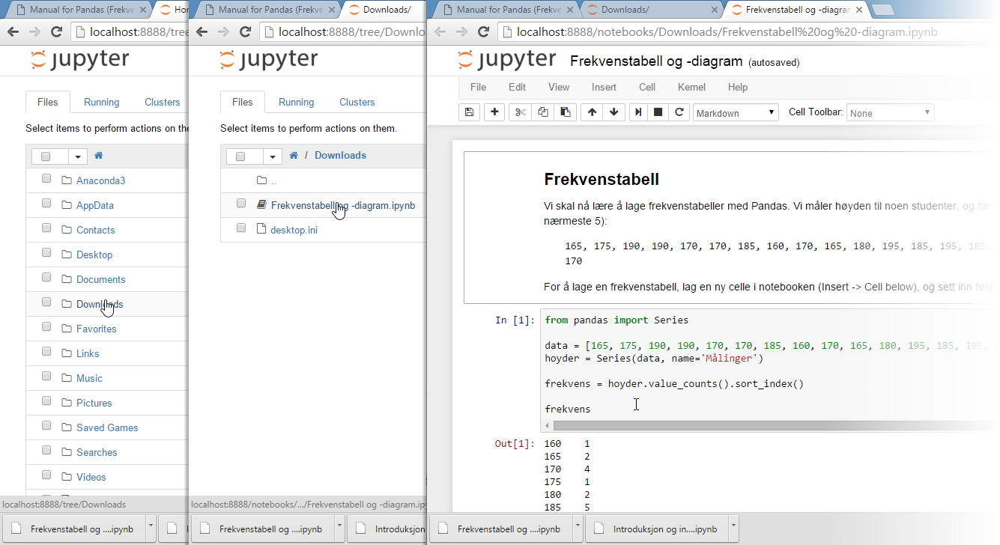

Bruk av Jupyter¶
Jupyter er det verktøyet vi bruker til skriving og kjøring av koden vår. Hvis du bruker Windows, kan du starte Jupyter notebook fra startmenyen. Søk etter "Jupyter" hvis ikke det kommer opp med en gang. Hvis du bruker Mac OSX eller Linux, og ikke finner Jupyter i programoversikten, er raskeste måten å starte et terminalvindu, skrive "jupyter notebook", og trykke Enter-tasten. Du skal da få opp et nettleservindu med Jupyter.
Ny notebook¶
For å starte en ny notebook trykker du "New" og "Python 3" øverst til høyre i vinduet. Da åpnes en ny side, hvor du kan begynne å arbeide.
All kode skrives inn i tekstfeltet ved siden av In [] i notebooken. Koden du har skrevet, kan kjøres ved å trykke på CTRL + Enter. Alternativt kan du trykke på avspillingsikonet i verktøylinjen på toppen.
Feltet ved siden av "In []" kalles en celle. Du kan tenke på dette som en fil. Man kan ha så mange celler man vil, og på den måten dele opp programmet i flere deler.
Test at det virker¶
Kopier og lim inn koden under, i en celle, og kjør så koden.
%matplotlib inline
from pandas import Series
import matplotlib.pyplot as plt
import numpy as np
data = Series(np.random.random_sample(10))
data.plot.bar()
plt.show()
![](data:image/png;base64,iVBORw0KGgoAAAANSUhEUgAAAXEAAAD8CAYAAACB3pQWAAAABHNCSVQICAgIfAhkiAAAAAlwSFlz
AAALEgAACxIB0t1+/AAAEFNJREFUeJzt3X2sZHddx/H3Z7u0oUCrWNILW9oVSlNpgAZxaQRleJAu
SFzFP+w2AjZBmuha/EdaRNP7BwpNTFRslKyuNUSxCSBxMQgFZCQ8lUVaWmSXXaguu9u6gjyFAtou
X/+YaXe4vQ/TvXPPPb/L+5VMds6Z357zuTP3fu6558yZk6pCktSmTesdQJJ06ixxSWqYJS5JDbPE
JalhlrgkNcwSl6SGrVjiSfYkOZ7kjmXGvCXJoSS3J7l0thElSUuZZkv8JuDypR5M8hLgyVX1FOBq
4K0zyiZJWsGKJV5VHwW+vsyQHcDbxmNvBc5Ocu5s4kmSljOLfeJbgCMT08fG8yRJa2xzlytL4jn+
knQKqiqLzZ/Flvgx4IkT0+eN5y0VZFW366+/ftXL2AgZ+pKjDxn6kqMPGfqSow8Z+pJjFhmWM22J
Z3xbzF7glQBJLgO+UVXHp1yuJGkVVtydkuTtwAD4sSRfBq4HTgeqqnZX1XuTvDTJF4F7gavWMrAk
6aQVS7yqrpxizK7ZxFnZYDDoalW9zgD9yNGHDNCPHH3IAP3I0YcM0I8ca50hK+1vmenKkupyfZK0
ESSh1vDApiRpnVjiktQwS1ySGmaJS9IqzM1tJcmqbnNzW095/R7YlKRVSAKsttey7Ek9HtiUpA3K
EpekhlniktQwS1ySGmaJS1LDLHFJapglLkkNs8QlqWGWuCQ1zBKXpIZZ4pLUMEtckhpmiUtSwyxx
SWqYJS5JDbPEJalhlrgkNcwSl6SGWeKS1DBLXJIaZolLUsMscakhc3NbSbKq29zc1vX+MjRDqaru
VpZUl+uTNpokwGp/hoI/h7PTxWuShKrKYo+5JS5JDbPEJalhlrgkNcwSl6SGWeKS1DBLXJIaZolL
apLvmR+ZqsSTbE9yIMnBJNcu8vhZSfYmuT3JnUl+beZJJWnC8eOHGb0/+9Rvo2W0bcWTfZJsAg4C
LwTuBvYBV1TVgYkxrwfOqqrXJzkH+AJwblXdv2BZnuwjrYIn+5zUl+eihZN9tgGHqupwVd0H3Azs
WDCmgMeM7z8G+J+FBS5Jmr1pSnwLcGRi+uh43qQbgacmuRv4LPDa2cSTJC1n84yWczlwW1W9IMmT
gQ8keXpVfXvhwPn5+QfvDwYDBoPBjCJI0sYwHA4ZDodTjZ1mn/hlwHxVbR9PXwdUVd0wMeafgDdV
1cfG0x8Crq2qTy9YlvvEpVXoy37gPujLc9HCPvF9wIVJLkhyOnAFsHfBmMPAi8YrOxe4CLhrimVL
klZhxd0pVXUiyS7gFkalv6eq9ie5evRw7QbeCPxNkjvG/+11VfW1NUstSQL8PHGpKX3ZhdAHfXku
WtidIknqKUtckhpmiUtSwyxxSWqYJS5JDbPEJalhlrgkNcwSl6SGWeKS1DBLXJIaZolrWV7HUOo3
PztFy+rL51NoxNfjpL48F352iiTplFniktQwS1ySGmaJ99hqDyp6QFHa+Dyw2WOrP2DSxkEbTc/X
46S+PBce2JQknTJLXJIaZolLUsMscUlqmCUuSQ2zxCWpYZa4JDXMEpekhlniktQwS1ySGmaJS1LD
LHFJapglLkkNs8QlqWGWuCQ1zBKXpIZZ4pLUMEtckho2VYkn2Z7kQJKDSa5dYswgyW1JPpfkw7ON
KUlazIrX2EyyCTgIvBC4G9gHXFFVBybGnA18HHhxVR1Lck5VfXWRZXmNzYfBa2xqIV+Pk/ryXLRw
jc1twKGqOlxV9wE3AzsWjLkSeFdVHQNYrMAlSbM3TYlvAY5MTB8dz5t0EfDYJB9Osi/JK2YVUJK0
tM0zXM4zgRcAjwI+keQTVfXFGS1fkrSIaUr8GHD+xPR543mTjgJfrarvAd9L8hHgGcBDSnx+fv7B
+4PBgMFg8PASS9IGNxwOGQ6HU42d5sDmacAXGB3YvAf4FLCzqvZPjLkY+DNgO3AGcCvwK1X1+QXL
8sDmw+CBTS3k63FSX56L9T6wueKWeFWdSLILuIXRPvQ9VbU/ydWjh2t3VR1I8n7gDuAEsHthgUuS
Zm/FLfGZrswt8YfFLXEt5OtxUl+ei/XeEveMTUlqmCUuSQ2zxCWpYZa4JDXMEpekhlniktQwS1yS
GmaJS1LDLHFJapglLkkNs8QXMTe3lSSrus3NbV3vL0PSDwE/O2URG+czGfqQYTY5NOLrcVJfngs/
O0WSdMoscUlqmCUuSQ2zxCWpYZa4JDXMEpekhlniktQwS1ySGmaJS1LDLHFJapglLkkNs8QlqWGW
uCQ1zBKXpIZZ4pLUMEtckhpmiUtSwyxxSWqYJS5JDbPEJalhlrgkNcwSl6SGWeKS1DBLXJIaNlWJ
J9me5ECSg0muXWbcTyW5L8nLZxdRkrSUFUs8ySbgRuBy4BJgZ5KLlxj3ZuD9sw4pSVrcNFvi24BD
VXW4qu4DbgZ2LDLut4B3Av89w3ySpGVMU+JbgCMT00fH8x6U5AnAL1bVXwCZXTxJ0nI2z2g5fwJM
7itfssjn5+cfvD8YDBgMBjOKIEkbw3A4ZDgcTjU2VbX8gOQyYL6qto+nrwOqqm6YGHPXA3eBc4B7
gddU1d4Fy6qV1tcHSYDV5gyr/VpXn6MPGWaTQyO+Hif15bnoIkcSqmrRjeNptsT3ARcmuQC4B7gC
2Dk5oKqeNLGym4D3LCxwSdLsrVjiVXUiyS7gFkb70PdU1f4kV48ert0L/8sa5JQkLWLF3SkzXZm7
UzrO0YcMs8mhEV+Pk/ryXKz37hTP2JSkhlniktQwS1ySGmaJS1LDLHFJapglLkkNs8QlqWGWuCQ1
zBKXpIZZ4pLUMEtckhpmiUtSwyxxSWqYJS5JDbPEJalhlrgkNcwSl6SGWeKS1DBLXJIaZolLetjm
5raSZFW3ubmt6/1lbAheKHkRG+cCrH3IMJscGunL69GHHH3I0FUOL5QsSRuUJS5JDbPEJalhlrgk
NcwSl6SGWeKS1DBLXJIaZolLUsMscUlqmCUuSQ2zxCWpYZa4JDXMEpekhlniktQwS1ySGjZViSfZ
nuRAkoNJrl3k8SuTfHZ8+2iSp80+qiRpoRVLPMkm4EbgcuASYGeSixcMuwv42ap6BvBG4C9nHVSS
9FDTbIlvAw5V1eGqug+4GdgxOaCqPllV3xxPfhLYcqqBVnvZJy/5JOmHyeYpxmwBjkxMH2VU7Et5
NfDPpxro+PHDrOZSR8ePL3oFI0nakKYp8akleT5wFfDcpcbMz88/eH8wGDAYDGYZQZKaNxwOGQ6H
U41d8ULJSS4D5qtq+3j6OqCq6oYF454OvAvYXlVfWmJZK14o2YsDzzJHHzLMJodG+vJ69CFHHzJ0
lWO1F0reB1yY5IIkpwNXAHsXrOB8RgX+iqUKXJI0eyvuTqmqE0l2AbcwKv09VbU/ydWjh2s38PvA
Y4E/z+jX0n1Vtdx+c0nSDKy4O2WmK3N3Ssc5+pBhNjk00pfXow85+pChqxyr3Z0iSeopS1ySGmaJ
S1LDLHFJapglLkkNs8QlqWGWuCQ1zBKXpIZZ4pLUMEtckhpmiUtSwyxxSWqYJS5JDbPEJalhlrgk
NcwSl6SGWeLSlObmtpJkVbe5ua3r/WVog/HKPmuSoS85+pBhNjn6oA/PRR8y9CVHHzJ0lcMr+0jS
BmWJS1LDLHFJapglLkkNs8QlqWGWuCQ1zBKXpIZZ4pLUMEtcveeZktLSPGNzTTL0JUcfMqw+Rx8y
9CVHHzL0JUcfMnSVwzM2JWmDssQlqWGWuCQ1zBKXpIZZ4pLUMEtckhpmiUtSw6Yq8STbkxxIcjDJ
tUuMeUuSQ0luT3LpbGNOGq7doqc2XO8AY8P1DkA/MkA/cgzXO8DYcL0D0I8M0I8cwzVd+oolnmQT
cCNwOXAJsDPJxQvGvAR4clU9BbgaeOsaZB0brt2ipzZc7wBjw/UOQD8yQD9yDNc7wNhwvQPQjwzQ
jxzDNV36NFvi24BDVXW4qu4DbgZ2LBizA3gbQFXdCpyd5NyZJpUkPcQ0Jb4FODIxfXQ8b7kxxxYZ
I0masRU/OyXJLwOXV9VrxtO/CmyrqmsmxrwHeFNVfXw8/UHgdVX1mQXLav+S55K0Dpb67JTNU/zf
Y8D5E9PnjectHPPEFcYsGUKSdGqm2Z2yD7gwyQVJTgeuAPYuGLMXeCVAksuAb1TV8ZkmlSQ9xIpb
4lV1Isku4BZGpb+nqvYnuXr0cO2uqvcmeWmSLwL3AletbWxJEnT8eeKSpNnyjE1JapglLkkNm+bd
KetqfHboDk6+7/wYsLeq9q9fqvUxfi62ALdW1bcn5m+vqvd1lGEbo2Mh+5I8FdgOHKiq93ax/iUy
va2qXrle6x9neC6jE+M+V1W3dLjeZwP7q+pbSR4JXAc8E/g88IdV9c0OMlwDvLuqjqw4eO0yPPCm
i7ur6oNJrgR+GtgP7B6fqNhVlicBL2f0jr0TwEHg7VX1rTVZX5/3iY8/p2Uno7NEj45nn8foxbq5
qt68XtkekOSqqrqpg/VcA/wmo2/KS4HXVtU/jh/7TFU9s4MM1wMvYfTL/wPAs4EPAz8HvL+q/qCD
DAvfGRXg+cC/AFTVL6x1hnGOT1XVtvH9X2f02rwbeDHwnq6+N5P8O/CMqro/yW7gO8A7gReO57+8
gwzfZPSGhi8Bfw+8o6q+stbrXZDh7xh9X54JfAN4NPAPjJ6HVNWrOspxDfAy4CPAS4Hbxnl+CfiN
qhrOfKVV1dsbo99gj1hk/umMPgqgDxm/3NF67gQePb6/Ffg0oyIHuK3DDKcx+kH5FnDWeP4jgTs6
yvAZ4G+BAfC88b/3jO8/r8PX/baJ+/uAx43vPwq4s8Mc+yefmwWP3d7Vc8Fo1+yLgT3AV4D3Aa8C
HtNRhjvG/24GjgOnjafT1ffmeH13Tqz7TGA4vn/+Wv2c9n13yveBJwCHF8x//PixTiS5Y6mHgK4+
I2ZTjXehVNV/JhkA70xywThHF+6vqhPAd5J8qcZ/HlbVd5N09Xo8C3gt8Abgd6rq9iTfrap/7Wj9
D9iU5EcZlddpNd7yrKp7k9zfYY7PTfw1+Nkkz6qqTye5COhqF0JV1fcZvQ35liSPYPQX207gj4DH
dZBh03iXyqMYlefZwNeAM4BHdLD+SZsZ7UY5g9FfBFTVl8fPy5qsrM9+G/hQkkOc/GyW84ELgV0d
5jiX0ac4fn3B/AAf7yjD8SSXVtXtAFX17SQvA/4aeFpHGf4vyZlV9R3gJx+YmeRsOvqlOi6LP07y
jvG/x1mf7+OzgX9j9D1QSR5fVfckeTTd/VIFeDXwp0l+D/gq8IkkRxj9vLy6oww/8PXWaP/zXmBv
kjM7yrAHOMDoL8U3AO9IchdwGaPdsV35K2BfkluBnwFuAEjyOEa/VGau1/vE4cGPwt3GDx7Y3Dfe
Iuwqwx7gpqr66CKPvb2qruwgw3mMtoT/a5HHnlNVH+sgwxlV9b+LzD8HeHxV3bnWGRZZ988Dz6mq
3+163YsZl9a5VfUfHa/3LODHGf1CO1odnjGd5KKqOtjV+pbJ8QSAqro7yY8AL2K0u/NTHee4BPgJ
Rge5D6z5+vpe4pKkpfk+cUlqmCUuSQ2zxCWpYZa4JDXs/wEkV3TFelYTaAAAAABJRU5ErkJggg==)
Hvis du fikk et diagram med ti stolper, slik som dette, er du klar til å fortsette.
Åpne eksisterende notebook¶
Notebookene fra denne guiden kan lastes ned på den blå knappen under kapitteloversikten til venstre. Når en notebook er lagret på maskinen, kan den så åpnes ved å bruke filbehandleren til Jupyter. Gå tilbake til startskjermen som åpnet seg når Jupyter startet, og finn nedlastingsmappen din. Trykk så på notebooken du lastet ned. Alle notebooks har filendelsen "ipynb".

Jupyter i bruk¶
Brukergrensesnittet til Jupyter er ganske enkelt. Det mest avanserte er koden du selv skriver i dokumentcellene dine.
Under "File"-menyen finner du som i de fleste andre programmer, valg for å åpne, lagre, og eksportere dokumenter. Du kan f.eks. eksportere en notebook til HTML (nettside) eller PDF.
"Edit"-menyen gir tilgang til klipping og liming, men du kan også bruke hurtigtaster, som i andre programmer.
"Insert"-menyen brukes for å sette inn flere celler. Det kan være lurt å bruke flere celler, fremfor å legge alt i en. Ved å dele opp notebooken kan hver del kjøres hver for seg, noe som er spesielt nyttig hvis man gjør tunge regneoperasjoner. Variabler fra en celle kan brukes videre i cellene under, så Jupyter husker hva den har gjort tidligere i dokumentet.
"Cell"-menyen brukes til å kjøre celler. Du kan kjøre enten enkeltceller, eller alle cellene i dokumentet. Det kan være lurt å gjøre en "Cell"->"Run All" når du åpner en celle du har arbeidet på tidligere. Dette sørger for at all koden blir kjørt, og alle variabler satt opp riktig.
"Kernel"-menyen brukes for å overstyre kjøringen av koden. Hvis du f.eks. ved en feiltakelse startet en veldig tung operasjon, kan du bruke "Kernel"->"Restart" for å stoppe kjøringen, og starte kjernen på nytt.
"Help"-menyen har en rekke pekere til dokumentajon for Jupyter, Pandas, Matplotlib, og andre programpakker. Lurer du på noe utover det som dekkes i denne manualen, kan du sjekke disse lenkene.